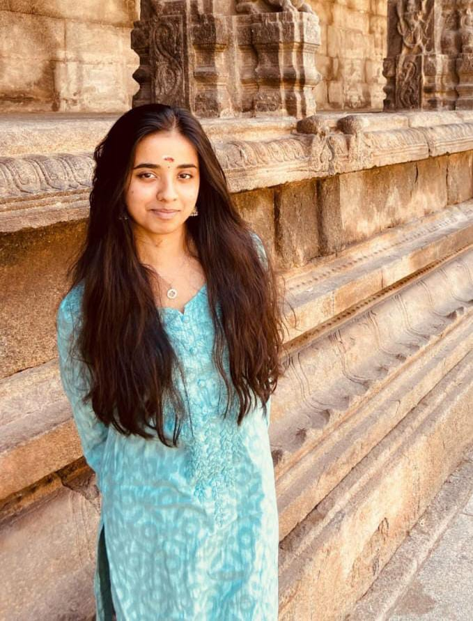

 My name is Parvati Nair, and I am a passionate and curious individual currently pursuing my studies in Btech Computer Science at VIT Vellore. I believe in continuous growth and strive to improve myself each day. My interests include learning new technologies, exploring creative ideas, and solving complex problems. I value hard work, collaboration, and innovation in everything I do.
As a student, I have gained experience in teamwork and problem-solving through various academic projects and extracurricular activities. My favorite subjects include Physics and Computer programming to name a few, where I enjoy diving into challenges that sharpen my analytical skills. I aspire to make a meaningful impact in my field by contributing to projects that combine creativity with functionality.
I believe that having a positive mindset and being adaptable are crucial traits in today's fast-changing world. My goal is to keep learning and use my knowledge to contribute to society in a meaningful way. Whether working on a project or collaborating with others, I focus on delivering quality results while staying open to feedback.